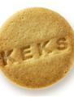

Keks

Eine Packung aus 10 Keksen aus 100% biologischen Anbau.
Ein Keks (aus dem Plural cakes von engl. cake ‚Kuchen‘) ist ein kleines, haltbares, ursprünglich englisches Gebäckstück. Kekse werden traditionell zu Kaffee oder Tee serviert und sind auch als Reiseproviant beliebt.
Sie bestehen meist nur aus wenigen, einfachen Zutaten wie Mehl, Zucker, Fett, Aromastoffen, Salz und Eiern und sind von mürber Konsistenz.
In Deutschland bekannt wurden Kekse vor allem durch den seit 1889 von der damaligen hannoverschen Cakes-Fabrik H. Bahlsen hergestellten Leibniz-Keks, der anfangs noch cakes genannt wurde.
Artikel-Preis:
1.06¹ €
¹ = ohne mwst.